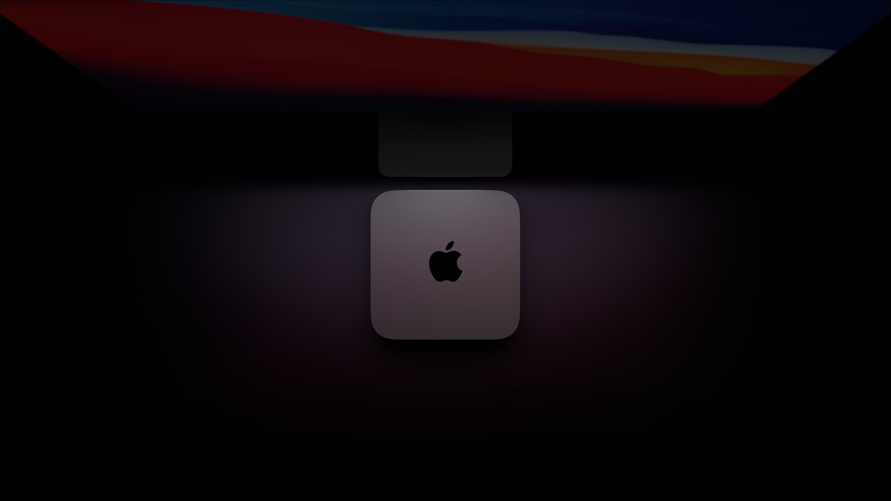
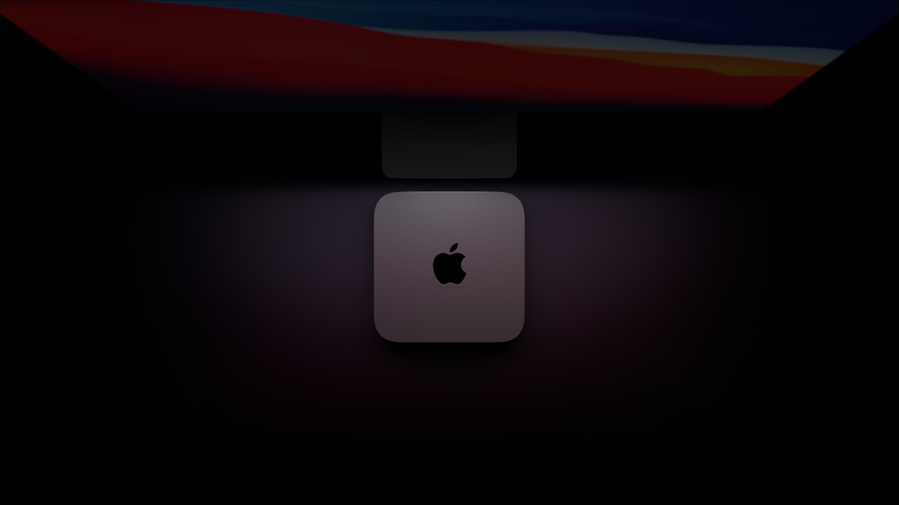

Financiamiento
Hasta 18 pagos mensuales fijos con tarjetas de crédito participante
Más información 

El nuevo chip M1 diseñado por Apple lleva nuestra computadora de escritorio mas versatil a otra dimension. ahora viene con un CPU hasta 3 veces más rapido, graficos hasta 6 veces más avanzado, que permite un aprendizaje automatico hasta 15 veces más rapido. Podras trabajar, jugar y crear con una velocidad y potencia que jamás habías imaginado. La Mac mini es poder para conquistarlo todo.

Con los superpoderes del chip M1 de Apple
Ya llegó el primer chip diseñado especificamente para la Mac. El sistema en chip (SoC) M1 de Apple tiene 16,000 millones de transitores e integra CPU, GPU, Neural Efine E/S y mucho más en un diminuto chip. Por eso, te brinda un rendimiento increíble, tecnologias exclusivas y una eficiencia energética líder en la industria. El chip M1 es más que un paso adelante: es la entrada al futuro de la Mac.
El chip M1 le da mucha más porencia y velocidad a la Mac mini. El CPU de 8 núcleos tiene una nueva velocidad de procesamiento hasta 3 veces mayor que la de la generacion anterior, sin modificar su icónico diseño cuadrado de 19.7cm.

El GPU 8 núcleos de chip M1 es el procesador gráfico más avanzado que hemos creado. Es por eso que la Mac mini tiene los gráficos integrados más rapidos del mundo en una computadora personal, con un redmiento gráfico 6 veces mayor que la generación anterior. Es un monumento a la potencia en un diseño incríblemente compacto.
Neural Engine de 16 núcleos. Es la mente maestra. El aprendizaje automático permite la automatizacion y acelración de funciones como análisis de video, reconocimiento de voz, procesamiento de imágenes y mucho más. Además, gracias al chip M1 con Neural Engine de 16 núcleos y toda la gama de tecnologías avanzadas, el aprendizaje automático en la Mac mini llega a un nivel superior.
macOS Big Sur fue creado para aprovechar todo el potencial del chip M1. El resultado es una Mac con un mejor rendimiento y muchos beneficios más. Trae grandes actualizaciones para las apps, un nuevo y espectacular diseño y funcionalidad de privacidad y seguridad líderes en la industria. Es nuesto software más avanzado en nuestro hardware más poderoso hasta ahora.


El chip M1 y macOS Big Sur trabajan en equipo para acelerar por completo el funcionamiento del sistema. La Mac mini se activa casi al instante. Las cosas que haces todos los días, como ver fotos o navegar en Safari, son más rápidas. Y las apps más exigentes pueden usar toda la potencia que necesitan.
Aprovecha las poderosas apps deiseñadas para funcionar con el chip M1. sigue disfrutando tus apps de siempre gracias a Rosetta 2. Además por primera vez puedes usar tus apps favoritas de iPhone y iPad en macOS Big Sur. En resumen, vas a tener la coleccion de apps más grande hasta ahora en tu Mac.


Gracias a las tecnologías integradas en el chip M1, la Mac mini es superior a otras computadoras mucho más grandes. Ahora puede procesar tareas mucho más complejas y consumir hasta 60% menos energia que la generación anterior.
El dominio de la RAM se expande. El chip M1 trae hasta 16 GB de memoria unificada ultrarápida. Con su memoria de baja latencia y gran ancho de banda, las apps pueden compartir datos eficientemente entre el CPU, el GPU y el Neural Engine para que todo sea más rápido y fluido.
La Mac mini con almacenamiento flash con un SSD de hasta 2 TB para que puedas guardar toda tu biblioteca de fotos y videos, archivos y apps. Y con velocidades de hasta 3.4GB/s, las apps y los archivos se abren y se cargan al instante.
La mac mini es perfecta para una gran variedad de usos gracias a su tamaño compacto. increíble rendimiento y amplia selección de puertos. Y con toda la potencia del chip M1, en un diseño cuadrado de tan sólo 19.7 centímetros, la Mac mini hace un gran trabajo dondequiera.


La mac mini convierte tu escritorio en una verdadera estación de trabajo. Sólo tienes que agregar un teclado, un mouse o trackpad y hasta dos monitores.
El GPU del chip M1 tiene el rendimiento de un procesador dedicado y te permite disfrutar juegos de gráficos avanzados con mayor velocidad de cuadros y mayor fidelidad.
EL CPU de 8 núcleos, la superrápida memoria unificada y los aceleradores de aprendizaje automático del chip M1 te permiten ejecutar más pistas, plug-ins y filtros en Logic Pro de los que nunca había permitido la Mac mini.
Desde instalaciones de arte hasta carteles digitales gigantes, la Mac mini puede trabajar con las pantallas digitales más grandes y brillantes gracias a su increible rendimiento, sus versátiles puertos de E/S y su incomparable eficiencia energética.
con dos puertos Thunderbolt/USB 4 increíblemente rápidos, dos puertos USB-A, HDMI 2.0, Wi-Fi 6 y Gigabit Ethernet, la Mac mini está lista para todo. Y ahora puedes configurarla con Ethernet de 10 Gb para obtener tasas de transferencia hasta 10 veces más rápidas que con la generación anterior.
Tranfiere datos a una velocidad de hasta 40 Gb/s. Carga dispositivos externos. Y conecta un monitor externo hasta 6K y un segundo monitor con HDMI 2.0 hasta 4K.
La tecnología Wi-Fi 6 llega por primera vez a la Mac mini, con un rendimiento superior y velocidades de hasta 1.2 Gb/s para transferir archivos y hacer respaldos con Time Machine a una velocidad supersónica.

Wi-Fi 6
de hasta 1.2 Gb/s

Abre esta página con Safari
en tu iPhone o iPad.


Como Apple fabrica el iPhone, el iPad, el Apple Watch y la Mac, todos funcionan juntos a la perfeccion
Más informacion
Trae una computadora que cumpla con los requisitos y obtén crédito par comprar una Mac nueva. Es bueno para ti y para el planeta.
Más informacion
Lista para acompañarte en todos los desafíos de la universidad
Comprar con precios especiales de Apple para la educacion Más informacion sobre la Mac en la educacion superior
con todo el poder para llevar a tu empresa al siguiente nivel.
Comprar para tu empresa Más informacion sobre la Mac en la empresa
Hasta 18 pagos mensuales fijos con tarjetas de crédito participante
Más informaciónY devoluciones sin costo.
Más informaciónHabla con un Especialista
por telefono o por chat.
Llama al 001-800-692-7753.
Aprovecha al maximo tu nueva Mac con la ayuda de un Especialista, te brindará desde informacion básica hasta consejos útiles.
Más información